1. Tiêu chí chọn nước hoa đi học mùa hè
- Độ tỏa hương (Sillage): Ưu tiên tỏa gần (skin-scent), thoang thoảng. Tuyệt đối tránh các mùi bám tỏa quá xa gây ngộp thở cho người xung quanh.
- Nhóm hương an toàn: Tập trung vào nhóm hương Cam chanh (Citrus), Biển cả (Aquatic), hoặc Trà xanh. Tránh xa các nốt hương gỗ đậm, gia vị cay hay quá ngọt.
- Độ lưu hương: Mức khá (4-6 tiếng), đủ duy trì sự tươi mát cho một buổi học trên trường.
- Mức giá & Sự đa dụng: Giá thành hợp lý. Mùi hương linh hoạt, dễ dùng từ lúc đi học đến khi đi chơi thêm.
2. Bí kíp test mùi và chọn mua
- Mua ống chiết (Vial/Decant): Luôn bắt đầu bằng ống chiết 5-10ml để thử xem mùi hương có bị biến đổi khi kết hợp với mồ hôi của bạn trong thời tiết nóng hay không.
- Thử trực tiếp lên da: Ngửi trên giấy thử (blotter) không phản ánh đúng 100% mùi hương thật khi lên cơ địa của mỗi người.
- Cho mũi nghỉ ngơi: Không nên ngửi liên tục quá 3 loại nước hoa cùng lúc để tránh tình trạng "loạn khứu giác".
3. Góc Review Chi Tiết
Hương Hè Cho Nam
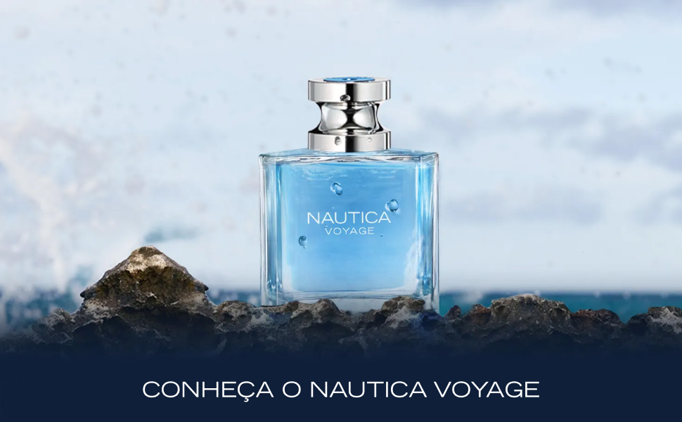
Mùi hương "quốc dân" cho nam sinh. Tươi mát, giòn tan mùi táo xanh và lá cây. Cảm giác sạch sẽ như vừa bước ra từ phòng tắm. Rất rẻ và cực kỳ an toàn cho không gian lớp học.
- Phong cách: Năng động, trẻ trung, thể thao.
- Giá tham khảo: ~500.000đ - 700.000đ / chai 100ml.

Huyền thoại kinh điển. Sự pha trộn mượt mà giữa chanh vàng và hương nước biển. Thanh lịch, nam tính và vô cùng dễ chịu.
- Phong cách: Thanh lịch, nam tính, kinh điển.
- Giá tham khảo: ~2.500.000đ - 3.000.000đ / chai 100ml.
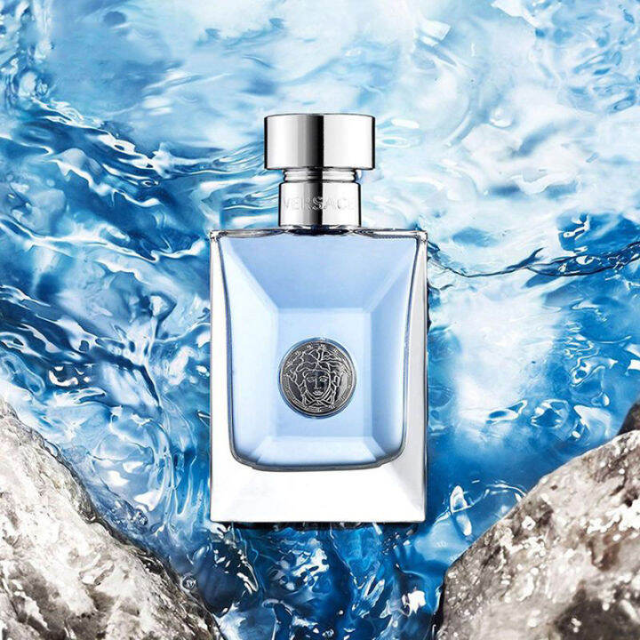
Sang trọng nhưng vẫn trẻ trung. Nổi bật với hương hoa hồng Pháp, chanh vàng và gỗ tuyết tùng. Độ đa dụng cực cao, đi học hay dự sự kiện trường đều hợp.
- Phong cách: Tươi mát, sang trọng, cuốn hút.
- Giá tham khảo: ~1.800.000đ - 2.200.000đ / chai 100ml.
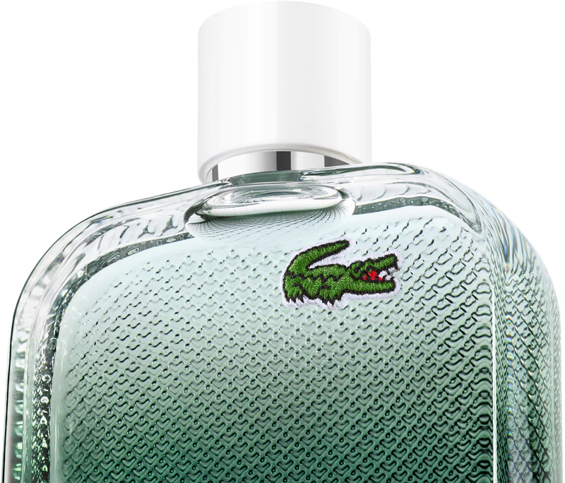
Mùi hương mang đậm tinh thần thể thao nhưng vẫn vô cùng thanh lịch. Sự kết hợp của quả bưởi tây, hoa huệ và da lộn tạo ra cảm giác sạch sẽ, tươm tất hệt như bạn vừa khoác lên mình một chiếc áo sơ mi trắng tinh khôi rực rỡ dưới nắng hè. Một lựa chọn tuyệt đối an toàn và ghi điểm tối đa.
- Phong cách: Sạch sẽ, tươm tất, năng động.
- Giá tham khảo: ~1.200.000đ - 1.500.000đ / chai 100ml.
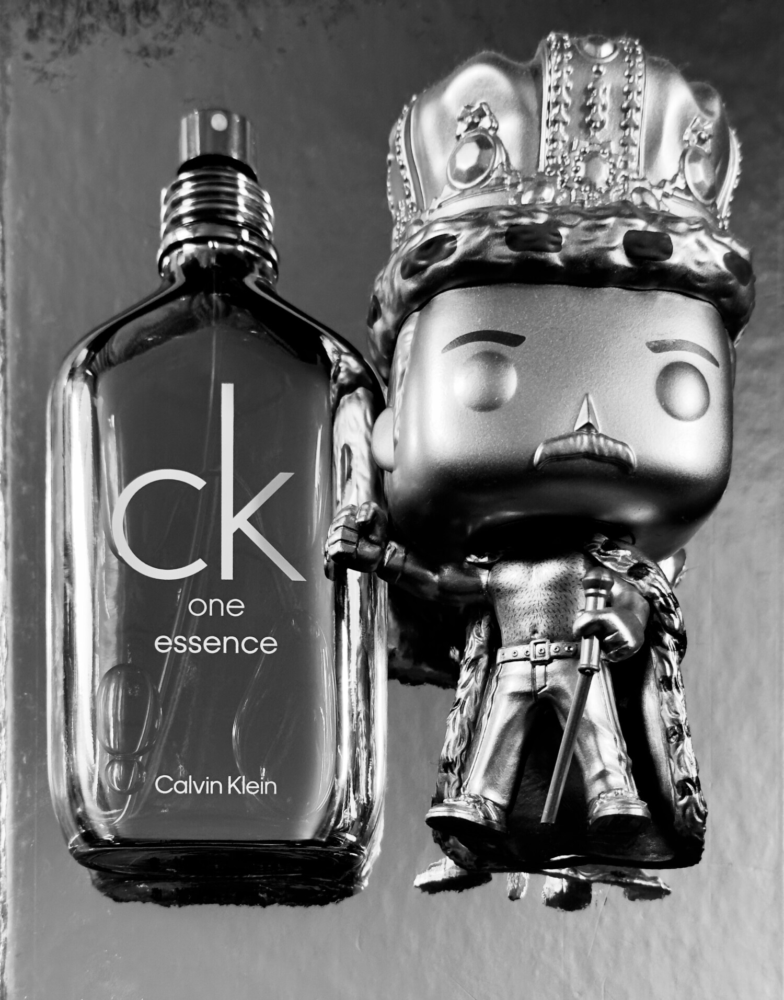
Phiên bản cao cấp và đậm đặc gấp đôi so với huyền thoại CK One nguyên bản. Vẫn mang ADN thanh mát, trong trẻo của trà xanh và cam chanh, nhưng Essence mượt mà hơn, có chiều sâu hơn và đặc biệt là độ lưu hương được cải thiện vượt trội. Thiết kế chai tráng gương bóng bẩy cực kỳ bắt mắt.
- Phong cách: Hiện đại, tự do, cuốn hút.
- Giá tham khảo: ~1.200.000đ - 1.600.000đ / chai 100ml.
Hương Hè Cho Nữ
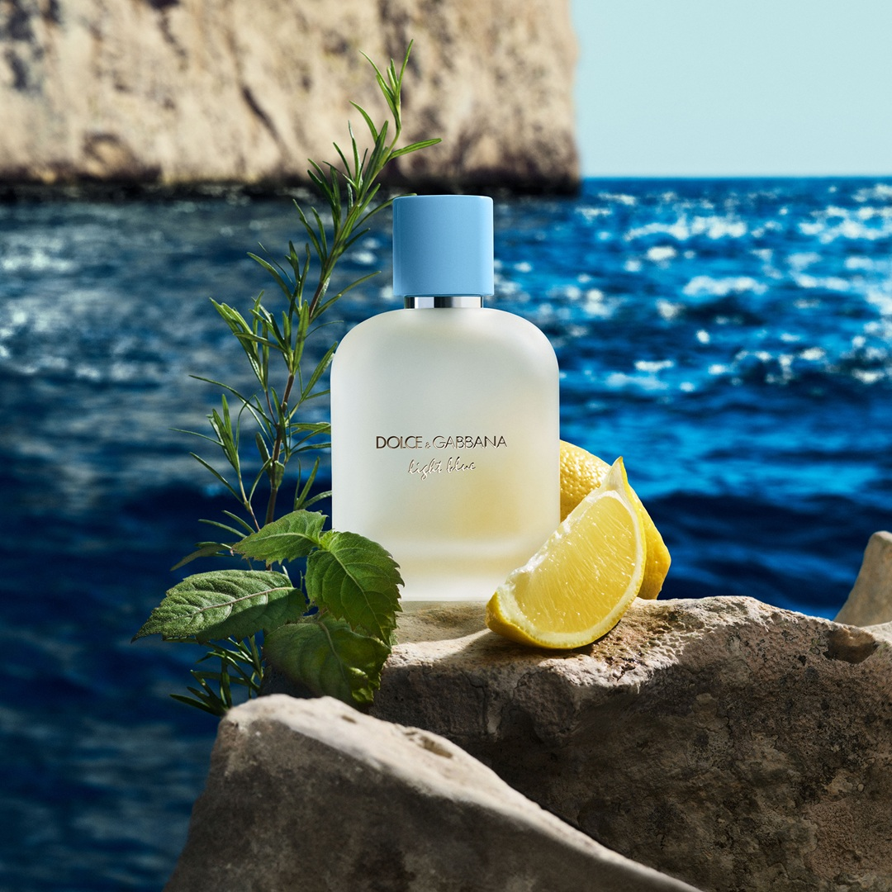
Giống như một ly nước chanh đá giải nhiệt. Hương chanh vàng Sicily kết hợp táo xanh cực kỳ trong trẻo, năng động, rất hợp mặc áo sơ mi trắng.
- Phong cách: Tự do, năng động, tươi mới.
- Giá tham khảo: ~2.000.000đ - 2.500.000đ / chai 100ml.
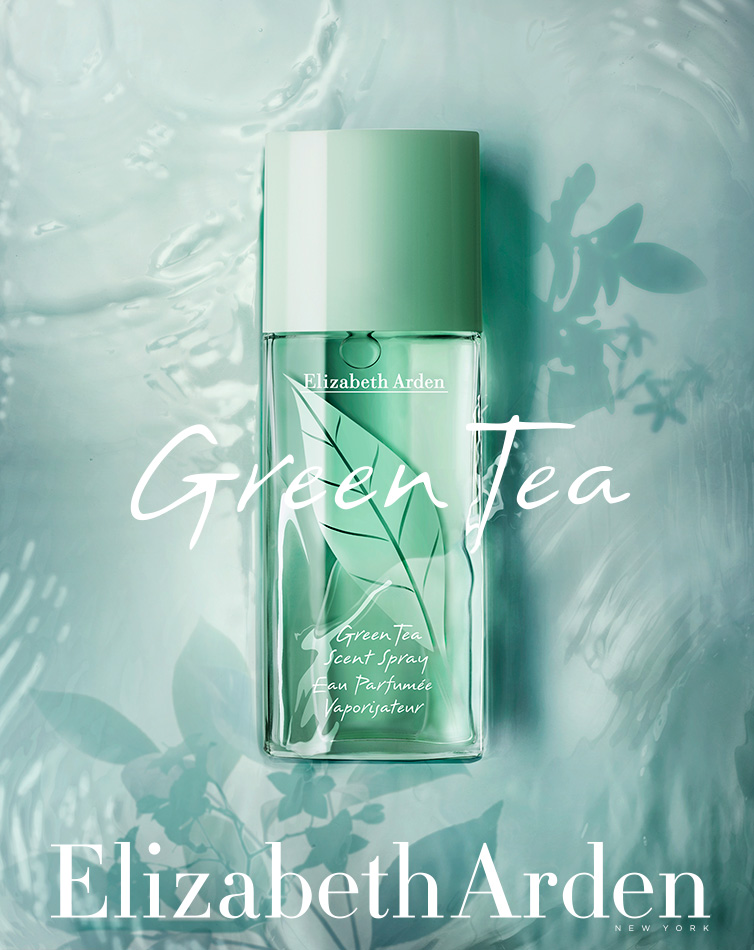
Nhẹ nhàng, thư giãn tuyệt đối với nốt hương trà xanh và bạc hà. Mùi hương không ồn ào, rất an toàn để dùng hàng ngày đi học.
- Phong cách: Giản dị, thư giãn, thanh tao.
- Giá tham khảo: ~400.000đ - 600.000đ / chai 100ml.
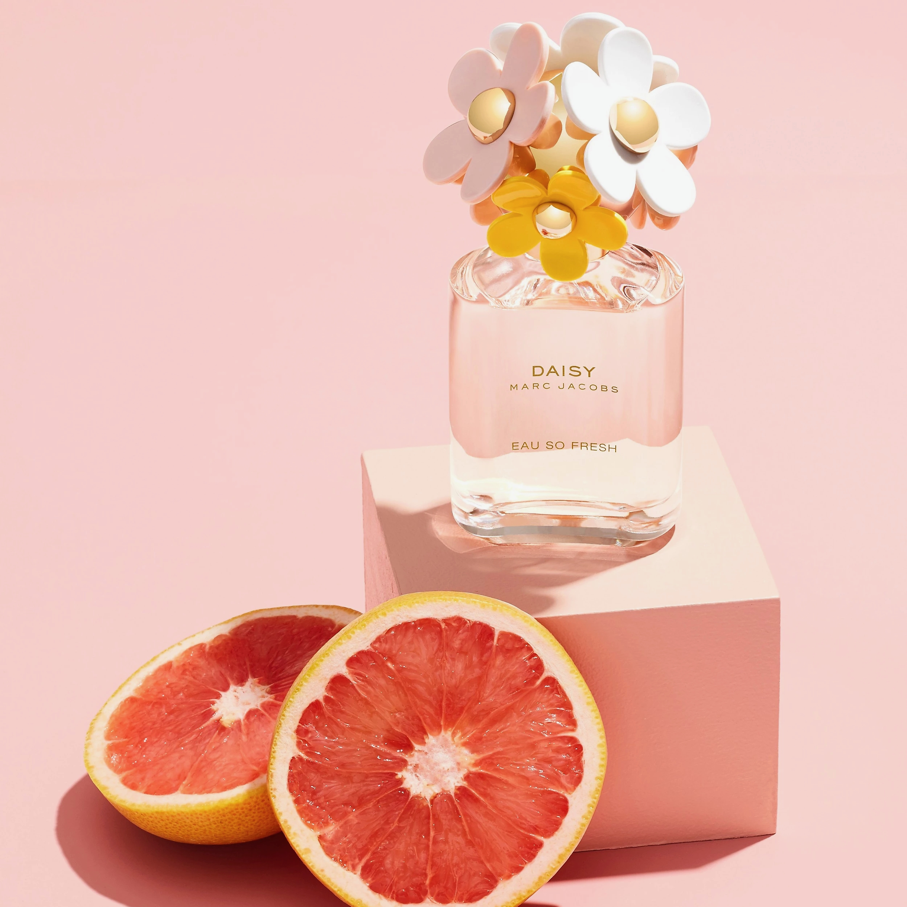
Dành cho các bạn nữ thích sự dễ thương, trong sáng. Sự kết hợp trái cây và hương lục tươi mát, không hề bị ngọt gắt.
- Phong cách: Dễ thương, nữ tính, trong trẻo.
- Giá tham khảo: ~2.200.000đ - 2.600.000đ / chai 100ml.
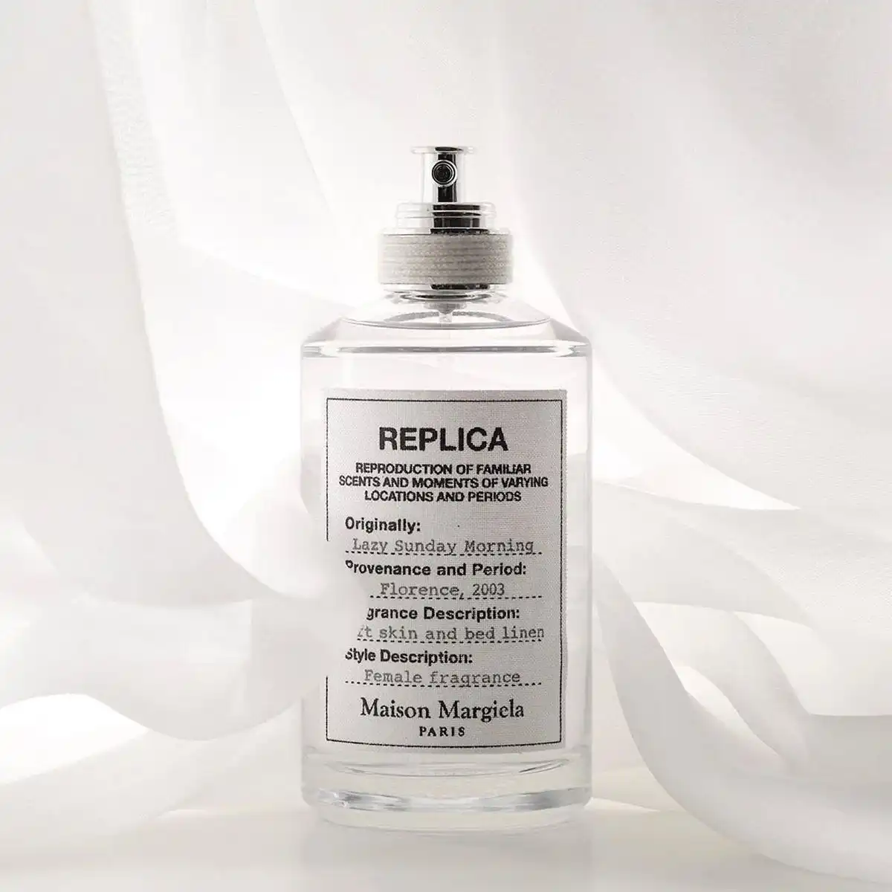
Đỉnh cao của phong cách "Clean Girl". Mùi hương mô phỏng sự sạch sẽ của những chiếc áo sơ mi trắng tinh tươm vừa được giặt phơi dưới nắng sớm. Sự kết hợp của hoa diên vĩ, xạ hương trắng và quả lê tạo nên một cảm giác vô cùng thư giãn, trong trẻo. Tuyệt đối an toàn và tinh tế cho môi trường học đường.
- Phong cách: Sạch sẽ, tinh khôi, thư giãn.
- Giá tham khảo: ~2.800.000đ - 3.200.000đ / chai 100ml.
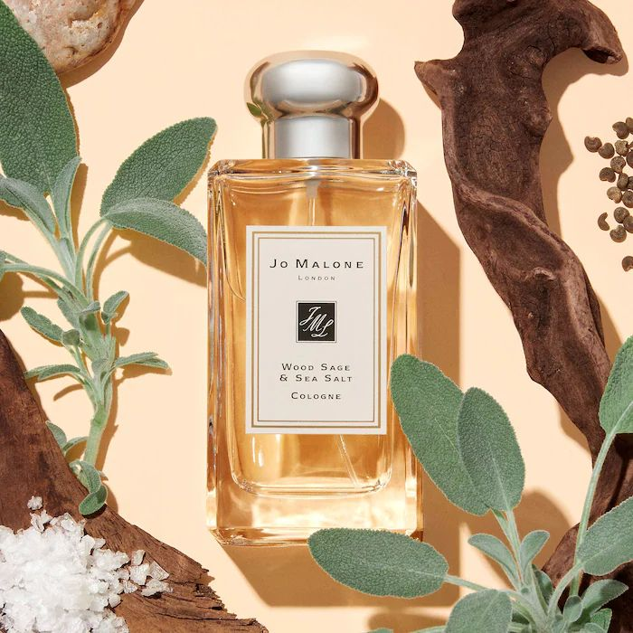
Một cơn gió biển thực sự giữa ngày hè oi ả. Khác với những mùi hương nữ tính ngọt ngào thông thường, chai nước hoa này mang vị mặn nhẹ của muối biển kết hợp cùng sự thanh tao của thảo mộc xô thơm. Rất mộc mạc, phóng khoáng, mát mẻ và xua tan ngay lập tức không khí ngột ngạt của lớp học.
- Phong cách: Tự do, thanh tao, gần gũi.
- Giá tham khảo: ~3.000.000đ - 3.500.000đ / chai 100ml.
4. Kỹ năng sử dụng đúng cách
- Vị trí xịt: Tập trung vào các điểm mạch tĩnh mạch (cổ tay, sau gáy, hoặc khuỷu tay) để nhiệt độ cơ thể giúp tỏa hương đều.
- Tránh ố vàng áo: Để vòi xịt cách da khoảng 10-15cm. Xịt trực tiếp lên da và đợi khô hẳn rồi mới mặc áo trắng đồng phục.
- Dưỡng ẩm giữ mùi: Bôi một lớp mỏng lotion không mùi lên da trước khi xịt sẽ giúp nước hoa bám trụ lâu hơn trong mùa hè.
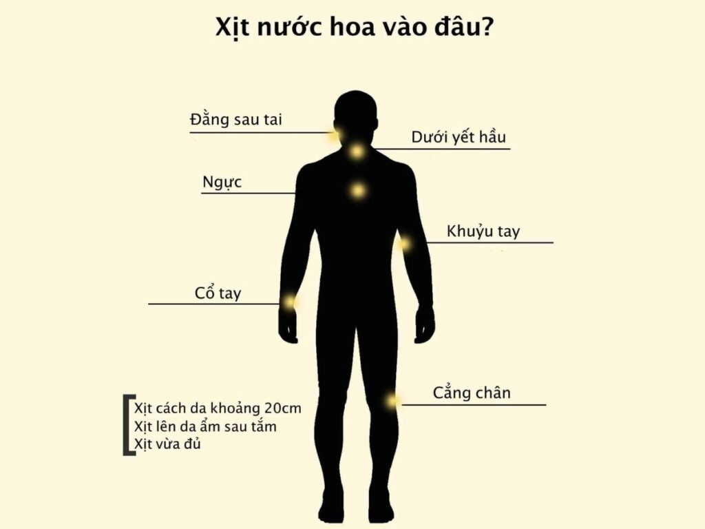
5. Góc Cảnh Giác: Phân biệt Thật - Giả
- Chi tiết bao bì: Hàng thật có font chữ in sắc nét, không bong tróc. Vòi xịt êm ái, ống dẫn nước hoa bên trong thường trong suốt và vừa vặn chạm đáy chai.
- Chất lượng mùi: Hàng giả (fake) thường có mùi cồn xộc lên mũi rất gắt ở nốt hương đầu và độ lưu hương cực kỳ kém (bay sạch sau 30 phút).
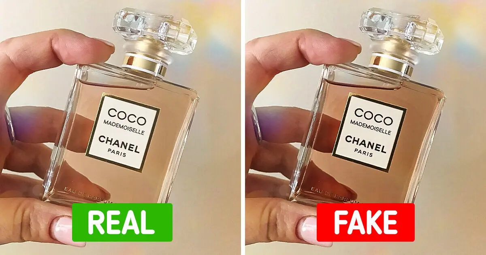
6. Giải đáp thắc mắc (FAQ)
Đi học xịt bao nhiêu nhát là đủ?
Nên xịt tối đa 2-3 nhát (1 ở cổ tay, 1-2 ở sau gáy) để duy trì sự thoang thoảng, tinh tế, không làm ảnh hưởng đến không gian lớp học chật hẹp.
Nước hoa mùa hè có dùng được cho mùa đông không?
Hoàn toàn được, nhưng độ tỏa hương sẽ kém hơn trong thời tiết lạnh do thiếu nhiệt độ cơ thể để khuếch tán. Mùi hương cũng sẽ có cảm giác lạnh và mỏng hơn.
Làm sao để bảo quản nước hoa không bị hỏng trong mùa hè?
Nhiệt độ cao là "kẻ thù" số 1 của nước hoa. Tuyệt đối không để nước hoa ở cốp xe máy, bệ cửa sổ có nắng chiếu vào hay trong phòng tắm ẩm ướt. Nơi lý tưởng nhất là cất lại vào hộp giấy của hãng và để trong tủ quần áo mát mẻ, tránh ánh sáng trực tiếp.
Có nên xịt thẳng nước hoa lên áo trắng đồng phục không?
Nước hoa chứa cồn và tinh dầu nên có rủi ro làm ố vàng áo sơ mi trắng theo thời gian. Tốt nhất bạn nên xịt trực tiếp lên da, đợi da khô hoàn toàn rồi mới mặc áo. Nếu vẫn muốn xịt lên quần áo để giữ mùi lâu hơn, hãy xịt cách xa khoảng 15-20cm để tia nước tỏa thành sương mù nhé.
Tham gia đóng góp ý kiến
Bạn thấy bài viết này có hữu ích không? Hãy để lại email và nhận xét để Trạm Hương Mùa Hè ngày càng hoàn thiện hơn nhé!